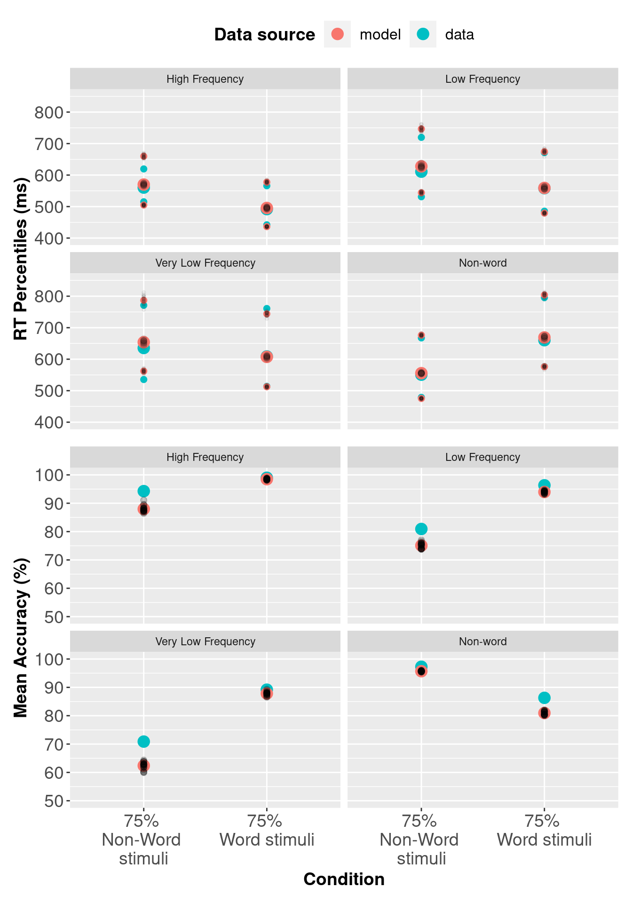

Chapter 4 PMwG sampler with the Linear Ballistic Accumulator and a complex experiment design
In chapter 2 we demonstrated how the PMwG sampler can be used to model a lexical decision task in a signal detection framework. However, the SDT framework does not allow us to consider response time (RT) and the join distribution of RT and accuracy. In this example we will expand on what was covered in chapter 2, by fitting the LBA - a more complex model - to the Wagenmakers 2008 data.
A description of the Wagenmakers experiment and data is covered in chapter 2. This experiment is more complicated than the Forstmann example in chapter 3, and the LBA is also more complicated than the SDT model. As a result, the log-likelihood function for this example will be more complex, however, you’ll notice that each step closely follows those taken in previous chapters with simpler data sets and simpler models.
4.1 The LBA log-likelihood function for the Wagenmakers data set
4.1.1 What is a log-likelihood function?
If you’re unsure what a log-likehood function is and/or does, see our explanation here.
4.1.2 Writing the LBA log-likelihood for the Wagenmakers data set
As we have shown in the previous two examples, we include a computationally-slow and easy to follow log-likelihood function. The log-likelihood function steps through the data line by line (i.e. trial by trial) and gives a likelihood value for each line given x parameters. As mentioned in previous chapters, we encourage those who have experience writing likelihood functions to write a computationally efficient function or use our fast LBA log-likelihood function. For those new to modelling, the trialwise function directly below is easier to follow, debug and is less likely to result in errors. The down side is that the slow/trialwise log-likelihood function is approximately five times slower to run than the fast log-likelihood function.
The structure of our log-likelihood function follows those in the preceding chapters, so we will focus on the parts that differ i.e. the experiment design and hypothesis about which parameters are being influenced by the experimental manipulations. See chapter 3 for an outline of the LBA parameters.
Let’s begin by loading rtdists package…
…and now a complete trialwise (slow) log-likelihood function.
tw_lba_ll <- function(x, data, sample = FALSE) {
x <- exp(x)
if (any(data$rt < x["t0"])) {
return(-1e10)
}
if (sample) {
data$rt <- rep(NA, nrow(data))
data$resp <- rep(NA, nrow(data))
} else {
out <- numeric(nrow(data))
}
for (i in 1:nrow(data)) {
A = x["A"]
b.w = x[paste0("b.", data$cond[i], ".W")] + A
b.nw = x[paste0("b.", data$cond[i], ".NW")] + A
bs = list(b.nw, b.w)
v.w = x[paste0("v.", data$stim[i], ".W")]
v.nw = x[paste0("v.", data$stim[i], ".NW")]
vs = c(v.nw, v.w)
t0 = x["t0"]
s = c(1, 1)
if (sample) {
tmp <- rLBA(n = 1,
A = A,
b = bs,
mean_v = vs,
sd_v = s,
t0 = t0,
dist = "norm",
silent = TRUE
)
data$rt[i] <- tmp$rt
data$resp[i] <- tmp$resp
} else {
out[i] <- dLBA(rt = data$rt[i],
response = data$resp[i],
A = A,
b = bs,
mean_v = vs,
sd_v = s,
t0 = t0,
dist = "norm",
silent = TRUE
)
}
}
if (sample) {
return(data)
} else {
bad <- (out < 1e-10) | (!is.finite(out))
out[bad] <- 1e-10
out <- sum(log(out))
return(out)
}
}Note: If you’d like to run through this example, it is best to copy the tw_lba_ll function from the code block above rather than copying from the separate code chunks below where curly braces have been removed.
We begin from the for loop on line 14. For for each row in the dataset, we assign the values (x) of each parameter in our model so that any conditional parameters (for example b in our model) are correctly assigned. For the Wagenmakers data set, we want to calculate the density function for a model that has a threshold (b) parameter for each of the conditions (cond = w: 75% words & 25% non-words, nw: 75% non-words & 25% words). We also want threshold to vary for respone (resp) type (i.e., the accumulator for a word (W) response, and the accumulator for the non-word (NW). So, on lines 16 and 17, we paste together the "b." threshold parameter, the condition (cond = w or nw) and the response ".W" or ".NW" and add the start point parameter A. The start point parameter is added to the threshold values to ensure that threshold is greater than the start point value.
We hypothesised that drift rate v would vary with word frequency (stim = hf,lf,vlf,nw), so on lines 19 and 20 we allow drift rate for response word (v.w) to vary with the levels of word frequency, by pasting the "v." with stim and with the accumulator for each response (".W" or ".NW"). You’ll notice that in this example, we no longer have a drift rate for the correct response (vc) or incorrect response (ve), instead, we have a drift rate for responding word (v.w) and non-word (v.nw). This is a different way (and our preferred way) of coding drift rate. On line 21 we have ordered the vs vector with v.nw first and v.w second.
for (i in 1:nrow(data)) {
A = x["A"]
b.w = x[paste0("b.", data$cond[i], ".W")] + A
b.nw = x[paste0("b.", data$cond[i], ".NW")] + A
bs = list(b.nw, b.w)
v.w = x[paste0("v.", data$stim[i], ".W")]
v.nw = x[paste0("v.", data$stim[i], ".NW")]
vs = c(v.nw, v.w)
t0 = x["t0"]
s = c(1, 1)It is important to check the order of your levels for the response factor to ensure you correctly order your v.nw and v.w accumulators in the vs vector.
## [1] "1" "2"If we look at our levels for response, we see the order is NW and W respectively. This means that NW is coded as 1 and W is coded as 2. Therefore, on line 36, if data$resp[i] = N.W then the level is 1, and the first accumulator in position 1 will be chosen. If data$resp[i] = W this tells the sampler that the accumulator in position 2 will be chosen. In other words, the parameters will map correctly because v.nw is in position 1 and v.w in position 2 in our vs vector.
The remaining lines of the log-likelihood function are identical to the function used in the Forstmann example in chapter 3, except the threshold parameter bs (line 29 and 44) is a list with two elements (b = bs)
4.2 Fast LBA Log-likelihood function
As we mentioned in section 3.3.3, the data is large and the dLBA function takes some time to run, so the log-likelihood code above is computationally inefficient. There are several ways to improve the log-likelihood’s performance; in our example below, we reduce the number of calls to dLBA to one call. We do this by passing a list of dLBA parameter values for the length of the data.
Note: When generating posterior predictive data, the rLBA function is still executed for each row of data; however, it is only executed several times, so computational efficiency is uncompromised.
fast_lba_ll <- function(x, data, sample = FALSE) {
x <- exp(x)
if (any(data$rt < x["t0"])) {
return(-1e10)
}
b.w = b.nw = v.w = v.nw = out = numeric(nrow(data))
for (p in unique(data$prop)) {
use <- data$cond == p
b.w[use] = x[paste0("b.", p, ".W")] + x["A"]
b.nw[use] = x[paste0("b.", p, ".NW")] + x["A"]
}
for (f in unique(data$freq)) {
use <- data$stim == f
v.w[use] = x[paste0("v.", f, ".W")]
v.nw[use] = x[paste0("v.", f, ".NW")]
}
bs = list(b.nw,b.w)
vs = list(v.nw,v.w)
if (!sample){
out <- dLBA(rt = data$rt,
resp = data$resp,
A = x["A"],
b = bs,
t0 = x["t0"],
mean_v = vs,
sd_v = c(1, 1),
distribution = "norm",
silent = TRUE)
out <- sum(log(pmax(out,1e-10)))
return(out)
} else {
data$rt <- NA
data$resp <- NA
for (i in 1:nrow(data)){
tmp<- rLBA(n = 1,
A = x["A"],
b = list(b.nw[i], b.w[i]),
t0 = x["t0"],
mean_v = list(v.nw[i], v.w[i]),
sd_v = c(1, 1),
distribution = "norm",
silent = TRUE)
data$rt[i] <- tmp$rt
data$resp[i] <- tmp$resp
}
return(data)
}
}You should improve your log-likelihood’s performance as you see fit. When you’re confident that your log-likelihood code functions correctly, we suggest saving it as a separate script so it can be sourced and loaded when running the sampler. If you’re learning how to write log-likelihood functions, take a look at our troubleshooting section for tips. In our experience, a very large proportion of problems with sampling and inference are caused by inadequate checking and care in the likelihood function.
4.3 PMwG Framework
Now that we have a log-likelihood function, we can set up the PMwG sampler. To run the sampler, we simply follow the procedure from chapter 2 and chapter 3; we need to set up a vector of model parameter names, create a priors object, source our LBA log-likelihood script and then create our sampler object.
First, load the PMwG library and data…
Let’s create a vector of model parameter names. Remember that this must match the names and number of parameters you include in your log-likelihood function. You can name this vector as you wish; however, in our example, we name it pars.
For the Wagenmakers dataset, we require four threshold parameters because we assume that both word proportion (cond) and response (resp) have an effect on level of caution (i.e. a threshold parameter for each combination of word proportion and response). We also need a drift rate for each cell of our design i.e. eight drift rate parameters; one for each level of word frequency (hf,lf,vlf,nw) for the Word response accumulator .W, and the non-word response accumulator .NW).
We’ve made a decision to set the sv to 1 to satisfy the scaling properties of the model. As such, we haven’t included the sv parameter in the pars vector - it is found in the LBA’s log-likelihood function (see below).
pars <- c("A",
"b.nw.NW",
"b.nw.W",
"b.w.NW",
"b.w.W",
"v.hf.NW",
"v.hf.W",
"v.lf.NW",
"v.lf.W",
"v.vlf.NW",
"v.vlf.W",
"v.nw.NW",
"v.nw.W",
"t0")For the mean of the distribution for random effects (theta_mu), we assume a multivariate normal prior. The user can specify the mean and variance of this prior distribution using the object priors, which has elements theta_mu_mean and theta_mu_var. A typical setting for LBA models is to set theta_mu_mean to be a zero vector and to set theta_mu_var to be a multiple of the identity matrix, e.g. with 9 on the diagonal (representing a standard deviation of 3 for the subject-level means in the prior).
We create our priors object; a list that contains two components:
theta_mu_meana vector containing the prior for model parameter meanstheta_mu_varthe prior covariance matrix for model parameters.
Now source and load your log-likelihood script before you create the sampler object.
Next we specify the PMwG sampler object.
The pmwgs function takes a set of arguments (listed below) and returns a list containing the required components for performing the particle metropolis within Gibbs steps.
data =your data - a data frame (e.g.wagenmakers) with a column for participants calledsubjectpars =the model parameters to be used (e.g.pars)prior =the priors to be used (e.g.priors)ll_func =name of log-likelihood function to be used (e.g.fast_lba_ll)
4.3.1 Running the sampler
Setup is now complete and we can run the sampler. First, we use the init function to generate initial start points for the random effects and store them in the sampler object. If you wanted you could include start points for your chain. We will not specify start points as we did in the Forstmann three threshold model. This is why have not included a start_mu and a start_sig. Instead, the start points will be drawn from the prior. Note: The init stage can take some time to run because it uses a large number of particles.
To run the sampler, we use the run_stage function. To execute the run_stage function, you must provide values for two arguments:
pmwgs =thesamplerobject including parameters that were created by theinitfunction above.stage =the sampling stage (In order;"burn","adapt"or"sample").
The following arguments listed below are optional:
iter =is the number of iterations for the sampling stage. For burn-in, it is important to have enough iterations that the chains converge on the posterior distribution. Default = 1000.particles =is the number of proposals (particles) generated for each random effect, on each iteration. Default = 1000, but set smaller or larger in order to target a reasonable acceptance rate (i.e. 10-60%).display_progress =display a progress bar during samplingepsilon =is a value greater than 0 which scales the variance of the proposal distribution. Smaller values (i.e. narrower proposal distributions) can lead to higher acceptance rates, but slower coverage of the posterior. Smaller values are especially useful when the number of random effects is large (e.g. >10). The default is adaptively chosen based on the number of parameters.n_cores =the number of cores on a machine you wish to use to run the sampler. This allows sampling to be run across cores (parallelising for subjects). Default = 1. Note: Settingn_coresgreater than 1 is only permitted on Linux and Mac OS X machines.
The first sampling stage is burn-in "burn". The burn-in stage allows time for the sampler to move from the (arbitrary) start points that were provided by the user to the mode of the posterior distribution. This can be checked by examining the chains for stationarity. We take the sampler object created in the init function above, set the stage argument to "burn" and assign the outcome to an object called burned. Iterations for burn-in (in this example iter = 1000) are set by choosing a sufficient number of iterations that will get the sampler to the posterior space Note: You should visually check the chains for convergence/stationarity after burn-in.
Next is the adaptation stage "adapt". The adaptation stage draws samples using a simple, but relatively inefficient proposal distribution (the same proposal distribution as the "burn"stage). Enough samples are drawn to allow the algorithm to estimate a much more sophisticated and efficient proposal distribution, using conditional normal distributions. We take the burned object created in the previous stage and set iterations iter = to a high number (e.g. 10000), as it should exit before reaching this point. If it doesn’t, there is likely an issue with acceptance rates, the likelihood function or limited data to operate on (i.e. few trials in some conditions). Here, we have saved the outcome of the adaptation stage to an object called adapted.
The final stage is the sampling stage "sample". The sampling stage uses the sophisticated and adaptive conditional normal proposal distributions. This allows for very efficient sampling, using far fewer particles. Samples from this stage are taken from the ‘posterior distribution’ and stored in the sampled object.
The sampled object includes all samples from the "sample" stage above and the following elements:
data: the data (data frame) you included in your analysispar_names: parameter namesn_pars: number of parametersn_subjects: number of subjectssubjects: subject IDs (1:n)prior: list of the prior usedll_func: the likelihood function specifiedsamples:alpha: three dimensional array of random effects draws (dim = parameters x subjects x samples)theta_mu: two dimensional array of parameter draws (dim = parameters x samples)theta_sig: three dimensional array of covariance matrix draws (dim = covariance x samples)stage: specifies the stage the sample is from (length = samples)subj_ll: likelihood value for each subject for each iteration (dim = subject x samples)a_half: the parameter used in calculating the inverse Wishart (dim = parameters x samples)idx: total number of sampleslast_theta_sig_inv: the inverse of the last sample for theta_sig (the variance-covariance matrix).
You should save your sampled object at this point.
For help with determining an appropriate number of iterations and particles required for your model estimation, see estimation settings for the PMwG sampler in chapter 3.
4.4 Simulating Posterior Predictive Data
We can generate posterior predictive data by setting sample = TRUE in our log-likelihood function to generate response times and responses given the posterior parameter estimates for each subject. To do this, we use the gen_pp_data function below, which calls the log-likelihood function embedded in our sampled object. The gen_pp_data function takes four arguments:
sampled: is the object/output from the PMwG samplern: the number of posterior samplesll_func =: the log-likelihood function embedded in thesampledobjectrbind.data =: bind the rows of each predictive sample into a rectangular array, or leave as a list.
gen_pp_data <- function (sampled, n, ll_func = sampled$ll_func, rbind.data = TRUE) {
sampled_stage <- length(sampled$samples$stage[sampled$samples$stage == "sample"])
iterations <- round(seq(from = (sampled$samples$idx - sampled_stage),
to = sampled$samples$idx,
length.out = n))
data <- sampled$data
S <- sampled$n_subjects
pp_data <- list()
for (s in 1:S){
print(paste0("subject", s))
for (i in 1:length(iterations)) {
print(i)
x <- sampled$samples$alpha[, s, iterations[i]]
names(x) <- sampled$par_names
out <- ll_func(x = x,
data = data[data$subject == unique(data$subject)[s], ],
sample = TRUE)
if (i == 1){
pp_data[[s]] = cbind(pp_iter = i, out)
}
else {
pp_data[[s]] = rbind(pp_data[[s]],
cbind(pp_iter = i, out))
}
}
}
if (rbind.data){
tidy_pp_data <- do.call(rbind, pp_data)
return(tidy_pp_data)
}
else {
return(pp_data)
}
}We generate 20 posterior predictive data samples.
The returned data is a matrix with the same dimensions and names as wagenmakers – with the addition of pp_iter column. pp_iter is the iteration of the posterior sample (in this example i = 1:20) for the corresponding subject. We now have two matrices based on samples from either model. The response (resp) and response time (rt) columns now contain posterior predictive data.
In the next section, we will use the posterior predictive data to assess descriptive adequacy.
4.4.1 Assessing Descriptive Adequacy (goodness of fit)
Now we will plot the posterior predictive data against the real data. In the section below we compare observed RTs against predicted RTs, which is common for RT modelling; however, the code could also be modified for different types of data.
# Recode condition column in order to calculate accuracy
# Data
wagenmakers$condition <- recode(wagenmakers$condition, w = "W", nw ="NW" )
wagenmakers$correct <- wagenmakers$correct - 1
# Posterior predictive data
ppdataWag$condition <- recode(ppdataWag$condition, w = "W", nw ="NW" )
ppdataWag$binary_stim <- ifelse(ppdataWag$stim =="nw", 1, 2)
ppdataWag$correct <- ifelse(ppdataWag$binary_stim == ppdataWag$response, 1, 0)
# Subject x condition Q25, median and Q75 respone time + mean accuracy
# Wagenmakers dataset
pqWag <- wagenmakers %>%
group_by(subject, condition, stim) %>%
summarise(Q25 = quantile(rt, prob = 0.25),
median = median(rt),
Q75 = quantile(rt, prob = 0.75),
acc = mean(correct),
.groups = "keep"
)
# Subject x condition Q25, median and Q75 respone time for posterior predictive data
pp_pqWag <- ppdataWag %>%
group_by(condition, pp_iter, subject, stim) %>%
summarise(Q25 = quantile(rt, prob = 0.25),
median = median(rt),
Q75 = quantile(rt, prob = 0.75),
acc = mean(correct),
.groups = "keep"
)
# Combine data with posterior predictive data and add data source
pqWag <- bind_rows(cbind(src = rep("data", nrow(pqWag)), pqWag),
cbind(src = rep("model", nrow(pp_pqWag)), pp_pqWag)
)
# Mean Q25, median, Q4 and accuracy for data and posterior predictive data
av_pqWag <- pqWag %>%
group_by(src, condition, stim) %>%
summarise_at(vars(Q25:acc), mean)
# Variances of posterior samples
pp_varWag <- pqWag %>%
filter(src != "data") %>%
group_by(condition, pp_iter, src, stim) %>%
summarise_at(vars(Q25:acc), mean)
# Convert source column to a factor and add labels
av_pqWag$src <- factor(av_pqWag$src,
levels = c("model", "data"),
labels = c("model", "data")
)
pp_varsrcWag <- factor(pp_varWag$src,
levels = c("model", "data"),
labels = c("model", "data")
)
# Rename conditions
levels(av_pqWag$condition) <-
levels(pp_varWag$condition) <- c("75% \nNon-Word \nstimuli","75% \nWord stimuli")
# Change plot stimuli labels
# Convert rt to milliseconds and acc to percentage
av_pqWag$acc <- 100 * av_pqWag$acc
pp_varWag$acc <- 100 * pp_varWag$acc
av_pqWag[, c("Q25", "median", "Q75")] <- 1000 * av_pqWag[, c("Q25", "median", "Q75")]
pp_varWag[, c("Q25", "median", "Q75")] <- 1000 * pp_varWag[, c("Q25", "median", "Q75")]
4.5 Model Comparison via DIC
Deviance information criterion (DIC) can be used as a metric to compare two models, and assess which model fits the data best, with penalties applied to model complexity. Note: we recommend using marginal likelihood (Bayes factors) instead of DIC for model selection. For more information, see this paper on estimating the Marginal Likelihood via importance sampling.
In this chapter we have covered one LBA model, however; we have included a DIC function and DIC value for completeness. To see an example where DIC is used as a model selection technique, see chapter 3.
pmwg_DIC <- function(sampled, pD = FALSE){
# Identify number of subjects
nsubj <- length(unique(sampled$data$subject))
# Mean log-likelihood of the overall (sampled-stage) model, for each subject
mean_ll <- apply(sampled$samples$subj_ll[, sampled$samples$stage == "sample"],
1,
mean)
# Mean of each parameter across iterations.
# Keep dimensions for parameters and subjects
mean_pars <- t(apply(sampled$samples$alpha[,, sampled$samples$stage == "sample"],
1:2,
mean))
# Name 'mean_pars' so it can be used by the log_like function
colnames(mean_pars) <- sampled$par_names
# log-likelihood for each subject using their mean parameter vector
mean_pars_ll <- numeric(ncol(mean_pars))
data <- transform(sampled$data,
subject = match(subject, unique(subject)))
for (j in 1:nsubj) {
mean_pars_ll[j] <- sampled$ll_func(mean_pars[j, ],
data = data[data$subject == j,],
sample = FALSE)
}
# Effective number of parameters
pD <- sum(-2 * mean_ll + 2 * mean_pars_ll)
# Deviance Information Criterion
DIC <- sum(-4 * mean_ll + 2 * mean_pars_ll)
if (pD){
return(c("DIC " = DIC, " Effective parameters" = pD))
}else{
return(DIC)
}
}We calculate a DIC value for a model by passing the sampled object into the pmwgDIC function.
# Load Wagenmakers sampled object and assign to variable "sampledWag"
load("wagLBAsamp.RData")
sampledWag <- sampled
pmwg_DIC(sampled = sampledWag) DIC Effective parameters
-20085.6336 224.2085